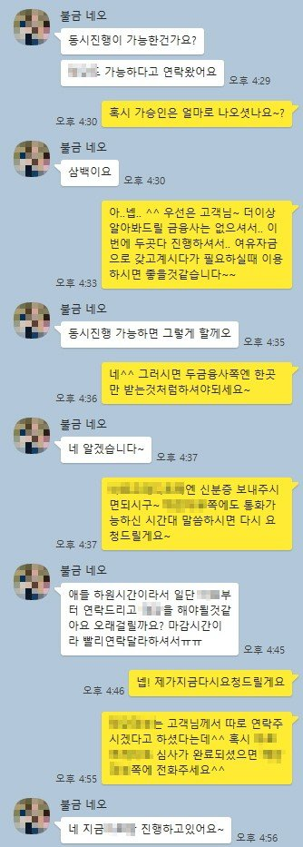
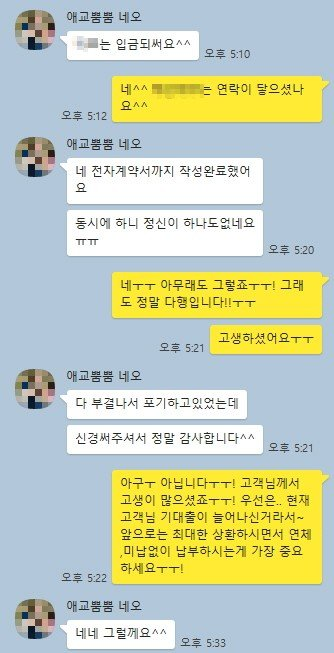

주부 기대출과다 동시진행 600만원 승인사례
안녕하세요~ 뱅크앤론 상담원 백진주입니다~~^^
오늘은 제가 상담드린 유**고객님의 대출 사례를 안내해 드리겠습니다.
유**고객님께서는 프리랜서로 1년정도 일하고계셨으나 코로나로인해서 , 최근3개월 소득증빙 확인이 어려우셨습니다.
기대출은 프리랜서조건으로 사용중인 기대출이 롯데 1490만원 고려저축 265만원 카드론 128만원 오케이저축 158만원 러쉬앤캐시 200만원 리드코프 300만원 현금서비스 100만원 총 2641만원이였습니다.
고객님께서는 필요하신 자금은 500만원 추가자금이 필요하셨고, 저희 뱅크앤론은 인터넷카페를 통해서 상담진행으로 신청하셨습니다 .
저는 고객님과 상담을 진행하면서 최근 현금서비스를 받은 이력을 확인하고 최대한 알아봐드릴 수 있는 금융사 안내를 해드렸습니다.
그 결과 동시진행으로 두금융사에서 각300만원씩 추가자금으로 확보하는데 성공하였으며 고객님께서는 매우 만족해 하셨습니다.
아래는 저와 유**고객님의 카톡상담 내용 일부를 캡쳐한것이오니, 참고하시어 많은 도움 되셨으면 좋겠습니다. 감사합니다^^

